本頁是 視覺提案，只確認概念、色彩、字體、圖形、影像處理與 2560×1280 關鍵構圖。動態尚未提案、尚未確認；分鏡與捲動行為在視覺確認後另行提出。頁內所有比例、間距與尺寸為構圖規劃，實作階段可在不改變主次關係的前提下微調。
| 案件 | ICHIA TECHNOLOGIES, INC.（毅嘉科技）企業形象網站首頁 |
|---|---|
| 模式 | CREATE 全新整體視覺改版（2026-09-19 使用者裁定）。現行上線版僅作內容事實對照，不沿用其設計。 |
| 已選方向 | A｜From Component to Module（層疊組裝）＋ C 編輯式留白底盤；客戶提供的流線型網格降級為銜接介質與資訊圖形，不做全站動態背景。 |
| 驗收尺寸 | 2560×1280 桌機優先，本階段不做 RWD。客戶校稿裝置 1280／1536／1920 列為交付前提醒。 |
| 語系 | 先做英文版；繁中版沿用同一套視覺系統，中文字體另列。 |
CIS 狀態：部分規範。已實讀客戶提供的 CIS 圖頁「基本系統 Basic Element／標誌標準色 A-02」：標誌藍 PANTONE 3005C，四色 C100 M34 Y0 K2，並附藍字版與藍底反白版標誌。未取得標誌淨空與最小尺寸頁、字型規範頁、輔助圖騰規範頁、禁止用法頁。以下未標「客戶正式」者，皆為本次提案的新增延伸。
#0084BE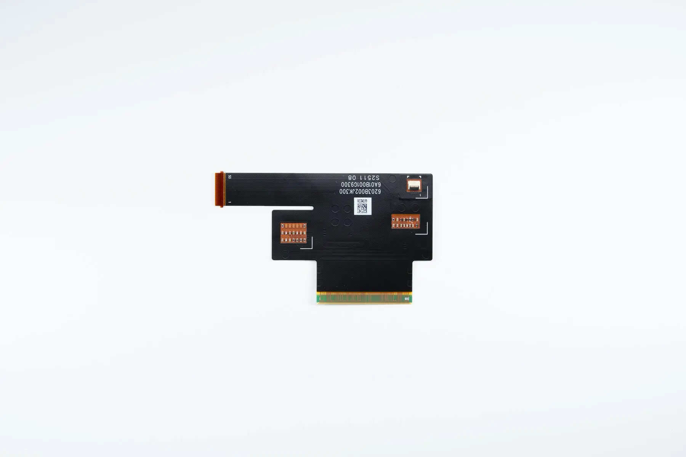
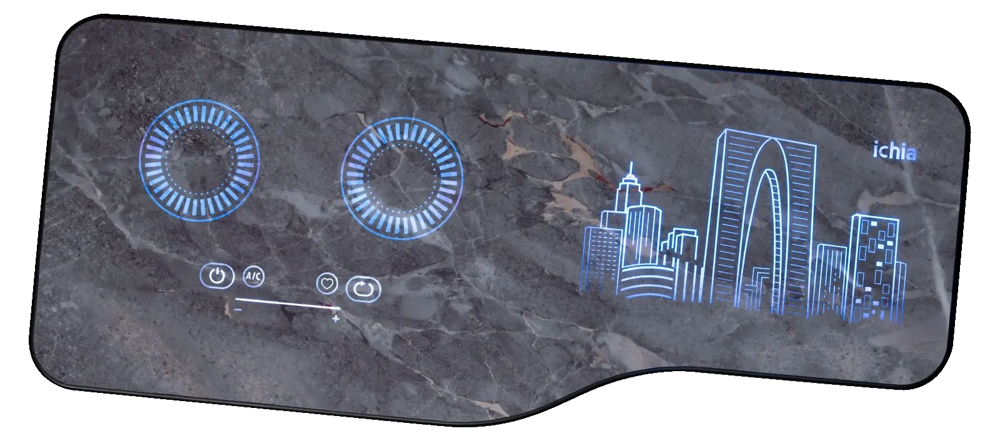
02 IMS/26_.jpg）：藍色發光＝天然的品牌色出場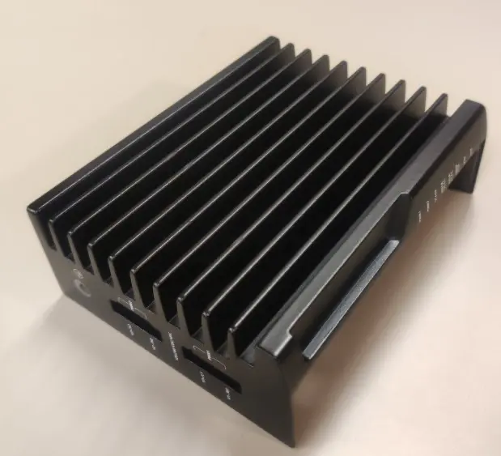
19.png 619×563），不足以做大圖特寫| 資產 | 來源／路徑 | 狀態與用途 |
|---|---|---|
| 標誌 | 01 LOGO_OK/logo.webp、CIS 標準色頁截圖 | 可用。本案需要反白版向量檔用於深色影片視窗上的浮水印；目前只有點陣版。 |
| EMS 產品 | 01 EMS/ 14 張，8640×5760 | 充足。白／淺灰底，適合 mix-blend-mode: multiply 直接融入白場，不必逐張去背。 |
| IMS 產品 | 02 IMS/ 25 張，8640×5760 | 最強素材。含同一面板的「未點亮／點亮」成對照片，可直接做功能圖解。 |
| TMS 產品 | 03 TMS/圖片1.png 289×220＋TMS Images on Slides.pptx（拆出 22 張可用） | 替代方案。可用者為溫度場模擬（16）、流場標註圖（14）、散熱鰭片（17／19）、均熱板（20–22）、熱管（23）、水冷排（27／28），解析度 539–1400 寬。首頁以中小尺寸圖解可成立；內頁大圖仍須請客戶補棚拍。 |
| 據點與團隊 | 4大據點公司外觀/ 8 張、團體照/ 8 張 | 據點外觀採用（林口、蘇州、中山、馬來西亞各 1–2 張）。團體照不採用（2026-09-19 確認）：多為紅布條活動紀錄，與「國際企業大氣穩重」落差過大；人的部分改由據點建築、職能標註與跑分承擔。 |
| ESG 影像 | 客戶示意（空拍森林河道）、相關照片/esg-bg.webp | 可用。作為 ESG 段唯一的大面積自然影像，與全站白場形成對比。 |
| 流線型網格 | 相關照片/esg-bg-deco.webp（白點陣於黑底）、footer-bg.webp | 需重製。原件為深色，與淺色方向衝突；本次已轉為 ICHIA 藍點陣透明版（見 §06）。 |
| Banner 影片 | Vimeo 1083267148 | 待處理。僅有連結，未取得可自架原始檔；中國境內播放需求未定案。 |
整頁只有一個主角——一個正在被組裝的模組。它在 Hero 成形，在 Products 被拆成三種切面，在 ESG 與 Careers 退到背景成為指標與地圖的骨架，在 CTA 收合成一條線。區塊之間之所以不會「一塊一塊」，不是因為加了轉場特效，而是因為主體從來沒有離開過畫面。
白場佔絕大多數面積，產品永遠有呼吸區；標題用細字大級數（Light 300）取得「大氣」，而不是用粗體取得「強勢」。所有元素對齊同一組 12 欄網格與同一條左側基準線，精準對齊本身就是「精密」的視覺證據。
產品照不加場景合成、不加濾鏡，保留棚拍原本的中性光；白底以 multiply 融入頁面，讓產品像是放在紙上，而不是貼在畫面上。唯一的高飽和來源是產品自己發出的藍光（IMS 面板、Mini LED）。
全站光源設定為「上方柔光」：陰影一律向下、極淡、無色偏。藍色只在三處出現——產品自身發光、資訊指標、行動入口。除此之外不使用藍色塊面，確保藍是次要強調色而非主色。
本案為 原創（CREATE）。四個客戶參考皆為品質與氣質基準，不作為母版、不做忠實重建。
| 參考 | 實看狀態 | 取用 | 不取用 | 如何轉化 |
|---|---|---|---|---|
| exo-one.com | 已實看（2026-09-19，瀏覽器捲動） | 「區塊沒有硬邊界、背景從不中斷」的結構原則 | 薄荷綠有機色團、生技語彙 | 把「連續背景」換成「連續主體」：不是背景色團貫穿，而是模組貫穿 |
| mundus.com.tw | 已實看（含公告 modal 與 cookie bar） | 白／淺灰底＋細字大標的比例感；滿版影像帶作為段落之間的換氣 | 暖色強調、太陽能產業影像語彙 | 影像帶只用在 ESG 一處，作為全站唯一的大面積自然影像 |
| aespula.com | 未實看：瀏覽器導向被拒 | — | — | 客戶明確「喜歡但要淺色版」，需補看後再校準；本提案未依據此站設計 |
| tesla.com | 未實看 | —（memo 列為整體氣質參考） | — | 本提案取的是「產品即主角、介面極簡」的通則，未取其任何具體版面 |
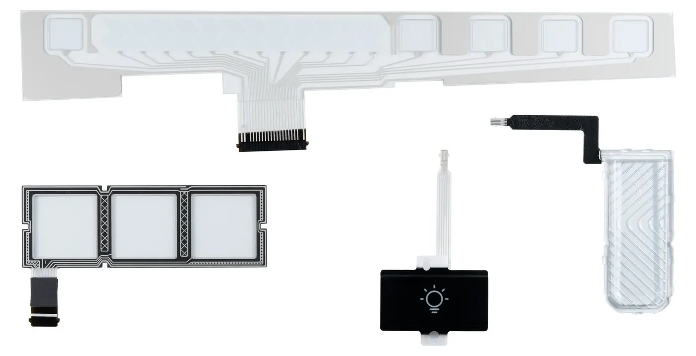
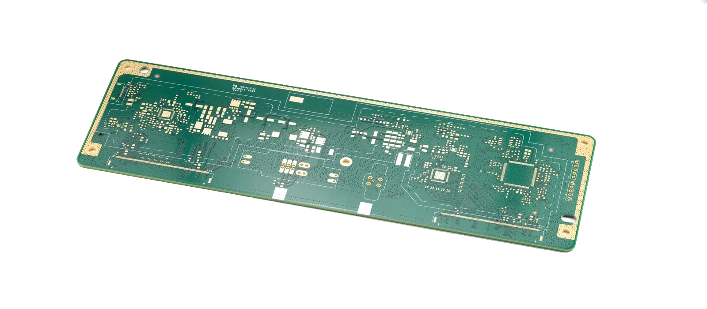
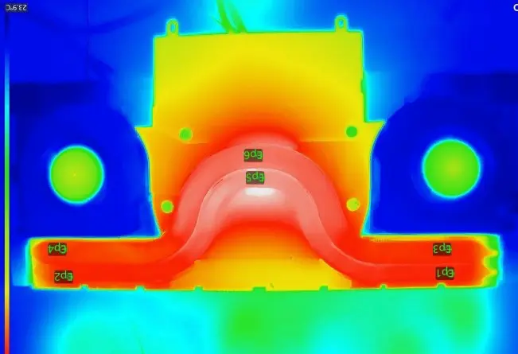
16.png）＝技術可信度，作為圖解而非裝飾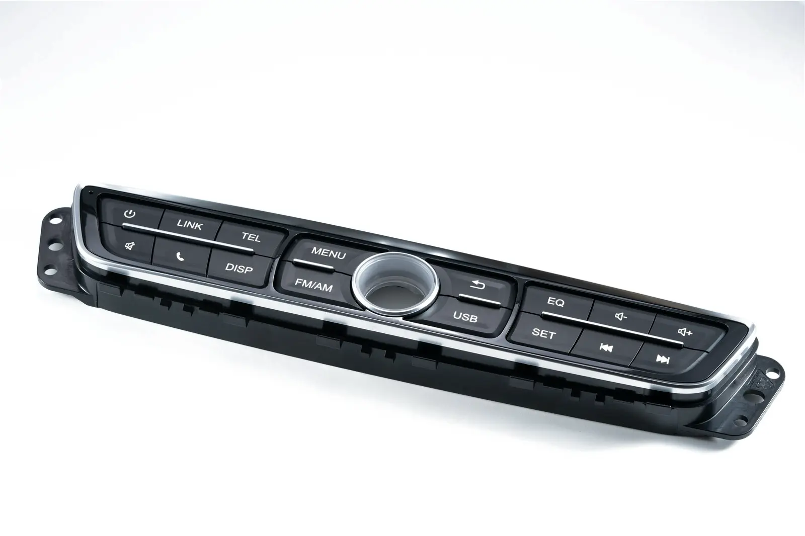
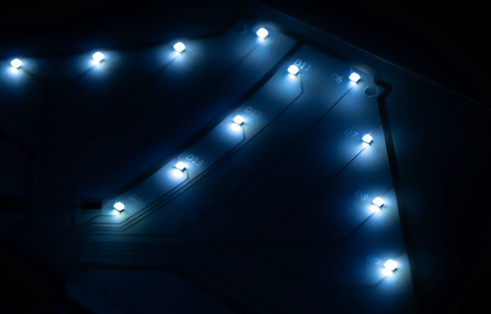
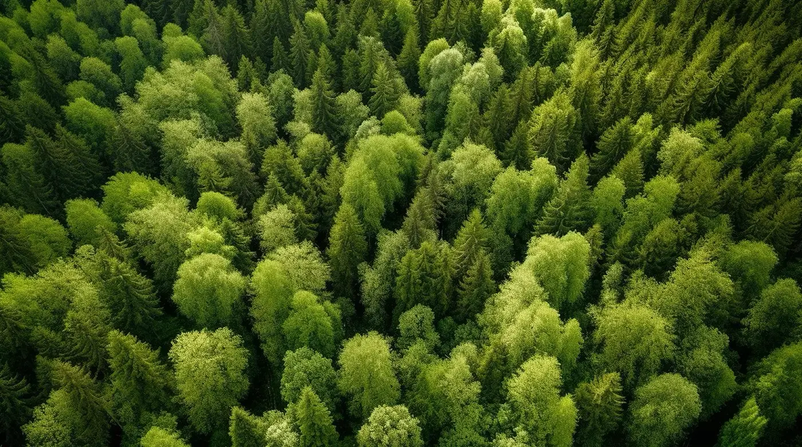
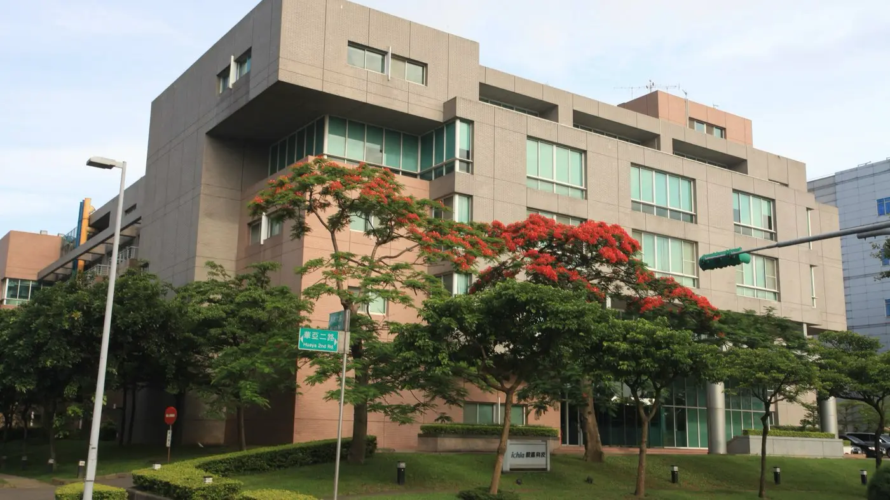
| 功能 | 色值 | 使用範圍 |
|---|---|---|
| 背景 Background | #FFFFFF | 全站基底；區塊之間不換底色（換底色＝製造「一塊一塊」） |
| 分區 Surface | #F4F6F8 | 僅用於卡片、表格與 Footer；不作整段背景 |
| 強調 Accent | #0084BE | 指標數字、細線、標籤、hover、主 CTA 底色 |
| 資訊底 Tint | #E8F4FA | 跑分數據區、圖解底板 |
| 行動 CTA | #0084BE 實底 / 白字 | Collaboration Inquiry、Join us 兩個主要入口 |
| 狀態 Status | #0084BE / #5A6672 | 目前段落指示、輪播進度；不引入第三色 |
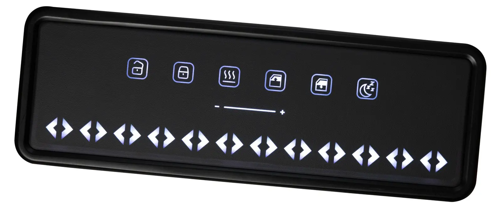
multiply 融入白場，保留產品原本的材質、反光與細節，不做二次調色。客戶 CIS 未提供字型規範，以下為本次提案的新增延伸，樣張為本頁實際載入的字體（Google Fonts）。
| 層級 | 字體／字重 | 2560 字級 | 用途 |
|---|---|---|---|
| Hero | Archivo 300 | 132 / 行距 1.06 | 首屏主標，僅此一處 |
| Section title | Archivo 300（關鍵字 500） | 86 / 1.1 | 各段主標 |
| Metric | Archivo 300 | 104 | ESG／Careers 跑分數字 |
| Body | Inter 300 | 24 / 1.75 | 段落敘述 |
| Label | Inter 500 · .2em · uppercase | 19 | 眉標、分類、狀態 |
| Nav / Button | Inter 400 | 21 | 導覽與按鈕 |
客戶未提供正式圖示資產，以下為本次新增提案：線性、2px 線寬（2560 尺標）、直角端點、24 格網格、僅用單色（#141A1F 或 #0084BE），不使用填色與圓角，呼應工程製圖語彙。
客戶指定「輔助圖形可參考簡報中的流線型網格」。客戶資料夾中的對應檔案為深色版（黑底白點陣），與 light and bright 直接衝突。本次處理方式：保留其點陣流線的結構，改為 ICHIA 藍、透明底的淺色版，不重繪形狀。
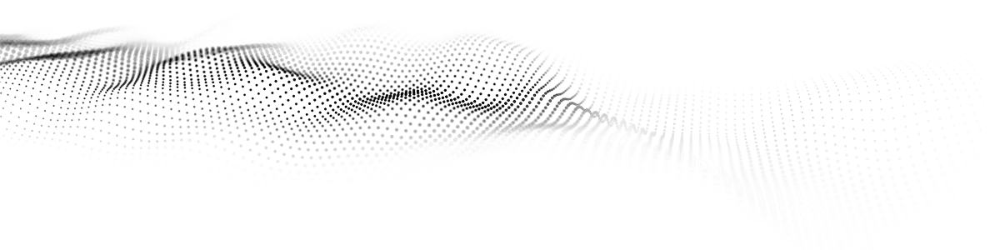
相關照片/esg-bg-deco.webp（黑底白點）— 不直接使用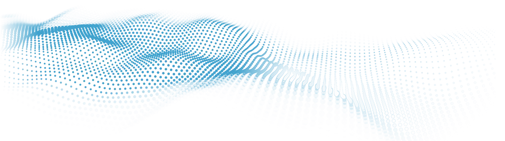
| 首次出現 | Hero 右下，作為模組落位的「場」，透明度 35%，不與主標重疊。 |
|---|---|
| 後續用途 | ① Products→ESG 之間作為銜接帶（寬 2560、高 320，透明度 25%）；② Careers 段轉為四據點的定位骨架（點陣即地圖底）。 |
| 退場 | CTA 段收束為單一條細線後消失，不帶進 Footer。 |
| 禁止 | 不得穿過內文、數據與 CTA；不得同一屏出現兩處；透明度上限 40%；不得重繪、變形或改色（藍色以外）。 |
0 24px 60px rgba(20,26,31,.10)，不加外框。選用客戶文案已載明的 IMS 能力「hidden displays and smart knobs」，且客戶素材中存在同一飾板的未點亮（30.jpg）／點亮（31.jpg）成對照片，另有石紋飾板的同款配對（28.jpg／26_.jpg），可做出有事實依據的圖解，不需任何示意插圖。
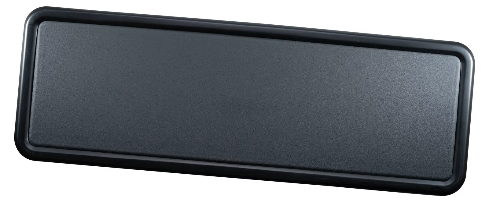
02 IMS/30.jpg），看不出任何介面。02 IMS/31.jpg），駕駛在需要時才看到控制項。以下五屏皆為 2560×1280 實際版面，於本頁等比縮放顯示（縮放比例見各屏右側）。使用本案真實素材與 memo 定稿文案。此為靜態構圖，動態尚未提案。
From component manufacturing to module integration,
we continuously deliver impactful services to our customers.
第一焦點：點亮的 IMS 面板（最高對比、最小面積）。次要訊息：Hero 主標與副標，細字大級數但低對比。行動入口：藍色實底 Explore Solutions。影片以「Brand Film」文字入口進入，不做滿版深色背景——這是為了保住 light and bright，需客戶確認是否接受。流線網格在右下、透明度 35%，不觸碰文字。
Ichia creates sleek, intelligent modules that blend electronics, mechanics, and design—like smart knobs and hidden displays—for seamless human-machine interaction across industries.
如何消滅「一塊一塊」：左欄索引三線始終在場，只有目前這一線展開描述；右側模組不離開畫面，只替換最上層的切面（此屏顯示 02 IMS）。段落沒有換底色、沒有分隔線橫貫全幅——整段維持與 Hero 相同的純白底，符合本案「Surface 不作整段背景」的色彩規則；層次全靠影像疊合與細線索引建立。
Ichia is committed to building a sustainable and responsible future through concrete ESG actions—reducing carbon emissions, improving energy and water efficiency, and earning recognition as a certified green factory.
交接設計：ESG 的森林影像只佔左上 1500×800 並加上由左至右的深色漸層遮罩（保留右半森林細節、確保白字可讀），右側白場的數據板壓在影像與白場的交界上，讓兩個區塊共用同一塊版面；接著流線網格橫貫底部把視線帶進 Careers 標題，Careers 的跑分沿用 ESG 同一套數字樣式但改白底黑字——同一語言、不同語氣，所以讀起來是一段而不是兩段。五項 ESG 跑分此屏全數呈現（客戶問「5 個會不會太多」→ 提案作法：4＋1 分層，金額獨立一行，視覺上不並列成五格）。
From Linkou to Suzhou, Zhongshan to Penang — select a site to see the roles, facilities and teams based there.
地圖互動＝一頁＋據點篩選（2026-09-19 確認）：四個定位點與左側清單是同一組狀態，點擊任一個就切換右側資訊卡與 openings 篩選結果，全部停在同一個 Careers 頁，不需要維護四個內頁。不使用團體照（2026-09-19 確認），人的部分改由據點建築、職能標註與跑分承擔。點陣地球沿用客戶素材 相關照片/map.webp 轉製的淺色版，與 §10 的流線網格同一套圖形語言。定位點位置目前為示意，正式版需依實際地理座標校正。
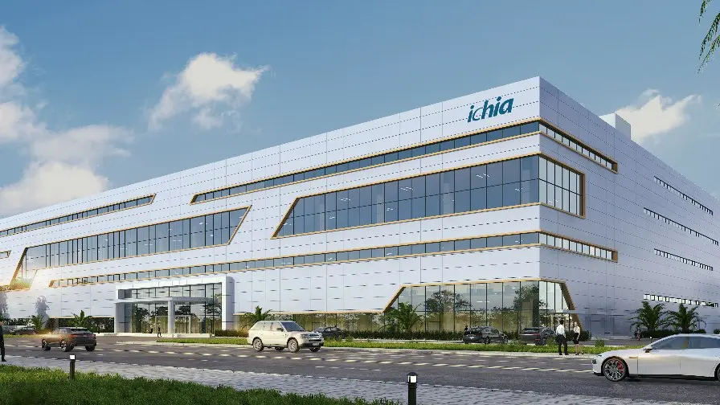
收尾：News 用 Sample 圖文（memo 指定），兩則橫排不做輪播箭頭以維持安靜；一條細線之後直接進 CTA，CTA 與頁尾聯絡資訊共用同一屏——這是刻意的：讓「決定合作」與「怎麼找到我們」在同一個視野內完成。Instagram／YouTube 以淡色呈現，對應 memo「先放 ICON、可後台隱藏」。Footer 不使用深色底，維持全站淺色基調。
| # | 段落 | 視覺主角 | 訊息／CTA | 與上一段的交接 | 動態強弱（意向） |
|---|---|---|---|---|---|
| 01 | Hero | 疊層模組（EMS 底／PCBA 中／IMS 面） | Act with Purpose, Impact with Vision＋Explore／Brand Film | — | 強（模組落位） |
| 02 | Product & Solutions | 同一模組的三次切面 | 三線描述＋View Full Solutions | Hero 的模組直接留在畫面右側，不淡出 | 強（換層） |
| 03 | 銜接帶 | 流線網格 | 無文字 | 模組縮小退成網格上的一點 | 中（過場） |
| 04 | ESG | 森林影像＋數據板 | Bridge To A Sustainable Future＋Read More | 數據板壓在影像與白場交界 | 弱（閱讀） |
| 05 | Careers | 點陣地球＋四據點建築（不用團體照） | Four sites. One team.＋Join us／View openings | 沿用 ESG 的數字樣式，換白底；地球接續 §10 的點陣語言 | 中（地圖點擊＝一頁篩選） |
| 06 | Latest News | Sample 圖文兩則 | Keep up with our latest updates | 細線分隔，安靜段 | 弱（閱讀） |
| 07 | CTA ＋ Footer | 字體與聯絡資訊 | Collaboration Inquiry／Join us | 網格收束為單線後消失 | 弱（收尾） |
| 名稱 | 來源／路徑 | 格式／可拆層 | 用途 | 狀態 |
|---|---|---|---|---|
| 客戶正式logo | 01 LOGO_OK/logo.webp | webp 500×175／不可拆層 | 導覽、頁尾 | 缺反白向量版 |
| 客戶正式EMS／IMS 棚拍 | 03 Section 1/01 EMS、02 IMS | jpg 8640×5760／白底可 multiply | Hero 疊層（35_、11、26_）、Products 切面、功能圖解（30／31） | 可用 |
| 客戶正式TMS 圖 | TMS Images on Slides.pptx（已拆出 22 張） | png／GIF，最大 2161×891 | TMS 切面、熱流圖解 | 僅夠中小尺寸 |
| 本次新增grid-light.png | 由 esg-bg-deco.webp 轉製 | png 透明底／可疊色 | Hero、銜接帶、Careers 地圖骨架 | 待確認 |
| 本次新增map-light.png | 由 相關照片/map.webp 轉製 | png 透明底／可疊色 | Frame 04 Careers 據點地圖 | 待確認 |
| 本次新增grid-wave-light.png | 由 footer-bg.webp 轉製 | png 透明底 | 備用（目前 Frame 未使用） | 待確認 |
| 客戶正式團體照 8 張 | 05 Section 3/團體照/ | jpg／png | — | 本案不採用（已確認） |
| 本次新增圖示 8 枚 | 本提案內嵌 SVG | svg／向量 | 分類與操作圖示 | 待確認 |
| 本次新增Archivo／Inter／Noto Sans TC | Google Fonts（本頁實際載入） | webfont | 全站字體 | 待確認 |
| 缺口Banner 影片檔 | 僅 Vimeo 連結 | — | Hero 影片入口 | 待取得 |
| 缺口TMS 正式棚拍 | — | — | 內頁大圖 | 待客戶提供 |
assets/ 內的檔案均為由客戶原始素材產生的網頁用衍生檔（縮圖、格式轉換、網格淺色化），客戶原始檔未被修改或移動。